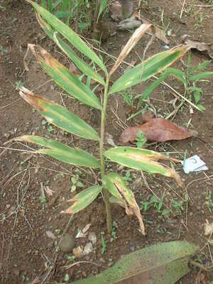

luya3 
/luya/
n.
“ginger”
n.
Zingiber_officinale
ginger
Wrd.Gloss: ginger
Ka luya iyan ka ngaran te pinamula ne egpekeiling te tagbak ka dewun piru malmalepet dè, ne diyè te diralem te tanè ka behas ne bayew egmakalawag wey egmaangkag. Maalas seini ne egkeenen wey sabeka ne leggu te egkeenen.
Iyan ney naan dè dengan ingkeuyag ka egpamelegyè te leew ne luya.
Our means of survival long ago was selling wild ginger.
Kahiyen din te egsakebut ke sayuti pad, kunaleg te luya bes e.
He/She thought what he/she tossed in the mouth was still a sayote but it was a ginger.
Inum ka te luya emun ke masakitan ka te gettek eyew egkeulian ka.
Drink a boiled ginger when your stomach aches so that you will be healed.
Eng. ginger
Tag. lúya
Ceb. luy-a
Ilo.: layá
Tigwanon: luya
WBM: luya
Ilianen: luya
Tagbawa: luya
Obo: luya
Sarangani: loya
Cagayano: luyʔa
Kinamigin: luyʔa
Binukid: luyʔa
Dibabawon: luiʔa
Proto: luy(ʔ)a
OCM: Flora (137), Diet (262)
Online dict status: -
Usage level: B
Updated by: RJH,TME
Last updated: 13/Oct/2009
This page last updated: 03-Jan-2020
Copyright © 2009-2014, Matigsalug Language Christian Association, Inc